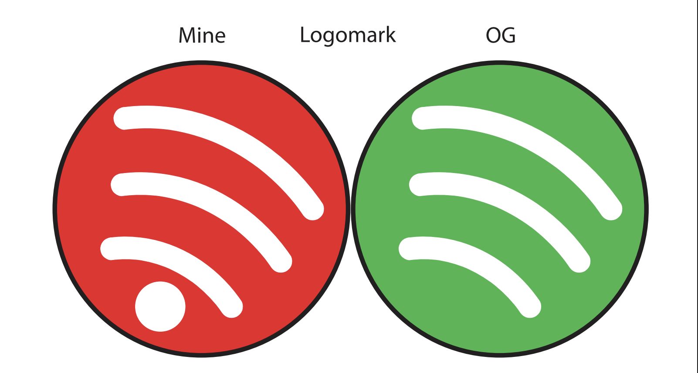
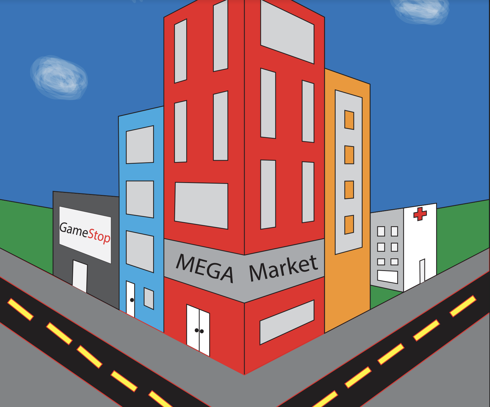
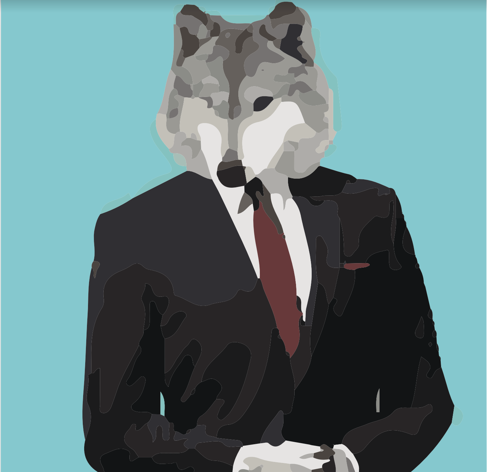
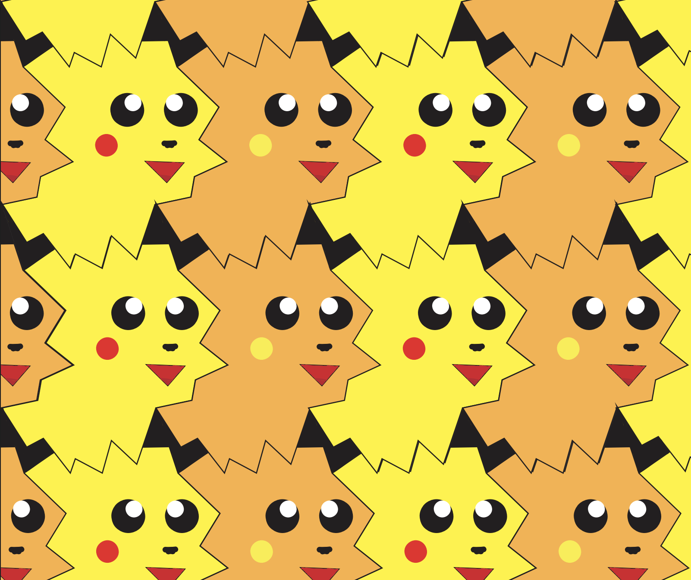

Visual Design Artifacts
Spotifty Remake

Spotify Description
We had to think of a logo to duplicate when creating this, so I choose the Spotify logo because it's the app I use the most throughout the day because I like music.
"On My Block" Art

"On My Block" Description"
We were instructed to create a tiny block and add any buildings or other items that we want. I decided to put a gamestop and a few other random structures because I enjoy playing video games.
Blur Blur Wolf

Wolf Description
We created this at the beginning of the school year while playing about with the Adobe settings, and I ended up creating what I like to refer to as blur blur wolf.
Pikachu Tessellations

Pikachu Description
This is one of my favorite pieces of art; I spent more time on it than any other because I didn't want the vision in my brain to go away, so I needed to finish it quickly while it was still fresh in my memory.
Emoji Recreation

Emoji Description
I choose this emoji because it reflects how I behave when playing video games at home when we were simply recreating emojis.